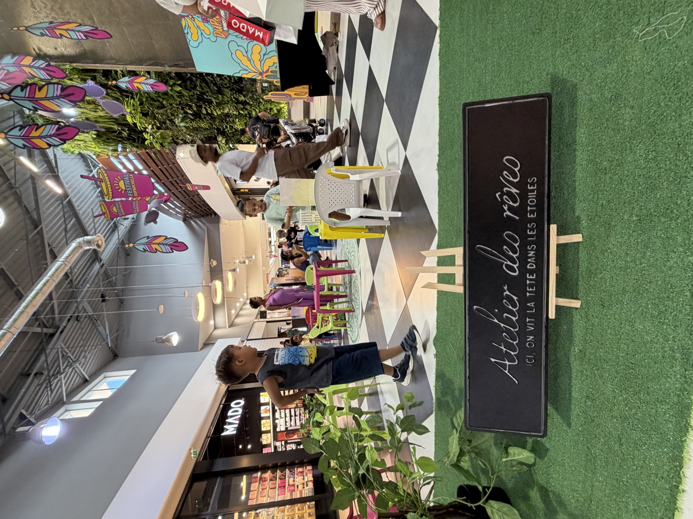

L'atelier créatif, c'est la valeur sûre de l'animation enfants : les marmailles adorent fabriquer, et ils repartent avec leur création (et des étoiles plein les yeux). Mais un bon atelier, ça se pense selon le moment de l'année et le public. Voici nos idées d'ateliers créatifs pour enfants à La Réunion, thème par thème, par l'équipe de Pull Up Événements — 4,9/5 sur Google.
Les ateliers qui suivent le calendrier
- Fête des mères / fête des pères — « crée ton cadeau pour maman » : carte, cadre, petit objet décoré. L'atelier le plus émouvant de l'année (et celui qui fait revenir les familles en galerie) ;
- Pâques — chasse aux œufs, décoration d'œufs et de lapins, bricolages printaniers ;
- Halloween — masques à décorer, araignées, citrouilles, maquillage qui fait (gentiment) peur ;
- Noël — boules et décorations de sapin, cartes de vœux, lettres au Père Noël ;
- Vacances scolaires — un thème par semaine pour occuper les enfants pendant que les parents font leurs achats ;
- Rentrée — customisation de trousses, marque-pages, petits kits créatifs.

Les ateliers par thème (au-delà des saisons)
On peut aussi donner un univers à toute une animation. Lors de notre festival « Duparchella » à Duparc Sainte-Marie, l'« Atelier des rêves » et les coins créatifs habillaient tout l'espace enfants dans une ambiance bohème. Selon vos envies : atelier tatouages éphémères, atelier broderie ou perles, atelier sable coloré, fabrication de bracelets, mini-fresque collective, atelier pâtisserie déco… Un thème fort (jungle, pirates, Californie, super-héros) fédère les enfants et rend l'animation mémorable.
Ce qui fait un atelier réussi
- Adapter à l'âge : gommettes et coloriage pour les petits, créations plus fines pour les grands ;
- Un résultat à emporter : l'enfant doit repartir avec « son » objet — c'est ce qui crée la fierté ;
- Un animateur dédié : encadrer, montrer, encourager — un atelier sans animateur tourne vite au chaos ;
- Du matériel prêt et sécurisé : tout est préparé en amont, rien de dangereux à portée des plus petits.
On installe l'atelier, vous profitez du sourire des enfants
Matériel, thème, animateurs et installation compris : nous montons vos ateliers créatifs enfants partout à La Réunion — en entreprise, en galerie, en école ou à domicile. Pour aller plus loin, voyez notre guide de l'animation d'anniversaire. Un projet ? 06 93 81 78 82, devis sous 48 h.